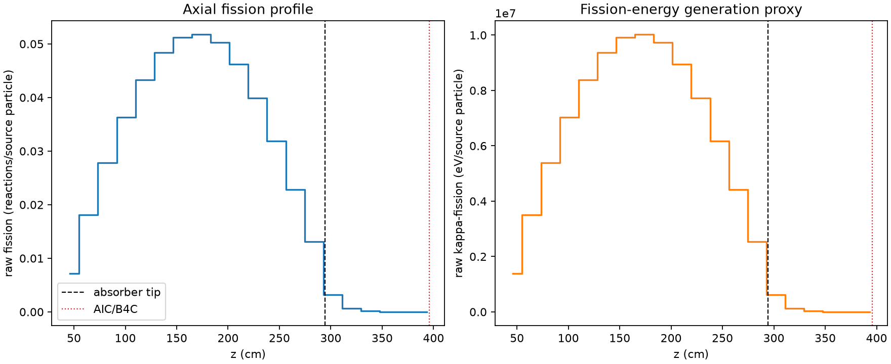
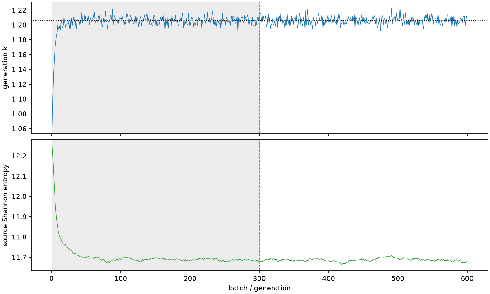

| field | value |
|---|---|
| experiment | V2-STAGE_256_OGRENCI_02-0017 |
| k | 1.2062490421291676 |
| MC standard error | 0.0001823705968833395 |
| seconds | 976.4797685059966 |
| acceptance | not_assessed |
| convergence | review_required |
Completed is output integrity only; physical and statistical review required. Zero tallies do not prove zero production or zero uncertainty.
| diagnostic | value |
|---|---|
| geometric fuel voxels | 5280 |
| zero fission tally voxels | 0 |
| low signal fuel voxels | 776 |
| low signal fission share | 9.199645010009668e-05 |
| low signal kappa share | 9.203429508819184e-05 |
| important fission share | 0.9500815764464214 |
| previous filter included | 4504 |
| duration estimate s | 1562.5173488400023 |
| actual minus estimate s | -586.0375803340057 |
| fission relative MC error | statistics |
|---|---|
| all_geometric_fuel | {"voxels": 5280, "positive_mean_voxels": 5280, "zero_mean_voxels": 0, "undefined_relative_error_voxels": 0, "median": 0.010498490363208022, "p95": 0.5773738304079132, "maximum": 1.0} |
| low_signal | {"voxels": 776, "positive_mean_voxels": 776, "zero_mean_voxels": 0, "undefined_relative_error_voxels": 0, "median": 0.4634722133451734, "p95": 0.9174022383670678, "maximum": 1.0} |
| important_95pct | {"voxels": 3165, "positive_mean_voxels": 3165, "zero_mean_voxels": 0, "undefined_relative_error_voxels": 0, "median": 0.008218467566580559, "p95": 0.012119268045106945, "maximum": 0.015066539032875833} |
| outside_previous_filter | {"voxels": 776, "positive_mean_voxels": 776, "zero_mean_voxels": 0, "undefined_relative_error_voxels": 0, "median": 0.4634722133451734, "p95": 0.9174022383670678, "maximum": 1.0} |
| kappa_fission relative MC error | statistics |
|---|---|
| all_geometric_fuel | {"voxels": 5280, "positive_mean_voxels": 5280, "zero_mean_voxels": 0, "undefined_relative_error_voxels": 0, "median": 0.0104870540758232, "p95": 0.5758912494930251, "maximum": 1.0000000000000002} |
| low_signal | {"voxels": 776, "positive_mean_voxels": 776, "zero_mean_voxels": 0, "undefined_relative_error_voxels": 0, "median": 0.46262555271635386, "p95": 0.9173462577769718, "maximum": 1.0000000000000002} |
| important_95pct | {"voxels": 3165, "positive_mean_voxels": 3165, "zero_mean_voxels": 0, "undefined_relative_error_voxels": 0, "median": 0.008209472141509206, "p95": 0.012105251568626338, "maximum": 0.015049407042520125} |
| outside_previous_filter | {"voxels": 776, "positive_mean_voxels": 776, "zero_mean_voxels": 0, "undefined_relative_error_voxels": 0, "median": 0.46262555271635386, "p95": 0.9173462577769718, "maximum": 1.0000000000000002} |
| axial bin | fission share | kappa-fission share |
|---|---|---|
| 1 | 0.014587881216590427 | 0.014588547898630908 |
| 2 | 0.03681174114963295 | 0.036811633538600695 |
| 3 | 0.056489860626039 | 0.05648983398271936 |
| 4 | 0.0737045440412058 | 0.0737043832662629 |
| 5 | 0.0879884931802676 | 0.08798817044267829 |
| 6 | 0.09832290475949065 | 0.09832241889755118 |
| 7 | 0.10404455483280793 | 0.10404446308908229 |
| 8 | 0.10508262317004519 | 0.10508220389810835 |
| 9 | 0.10209035574935765 | 0.10208985083787943 |
| 10 | 0.09382919381357814 | 0.09382875458386537 |
| 11 | 0.08097002036464876 | 0.08096979170500342 |
| 12 | 0.06476340481284737 | 0.06476314631431346 |
| 13 | 0.04636929951212388 | 0.0463692191997694 |
| 14 | 0.026585270448331016 | 0.026585169346943088 |
| 15 | 0.006549922418373965 | 0.00655177816372377 |
| 16 | 0.0013969970326676013 | 0.0013975192723857306 |
| 17 | 0.0003168600497952508 | 0.00031700319919749075 |
| 18 | 7.67832825504735e-05 | 7.681444996260247e-05 |
| 19 | 1.5991578896115553e-05 | 1.5999121399432093e-05 |
| 20 | 3.2979607503111797e-06 | 3.2987919227670317e-06 |
Histories include the inactive-to-active transition at batch 300. kappa-fission approximates fission energy production, not total heat deposition.

